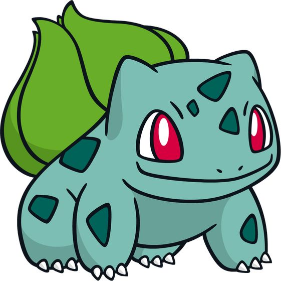
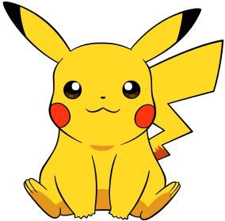
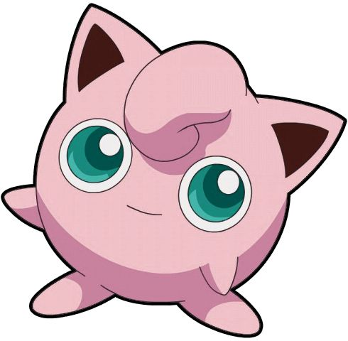
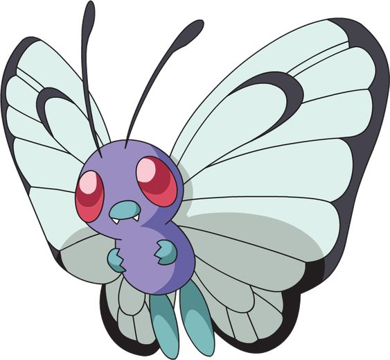
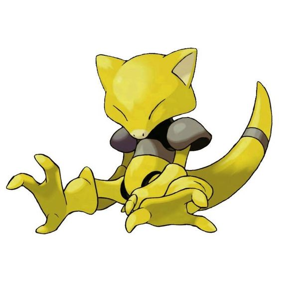
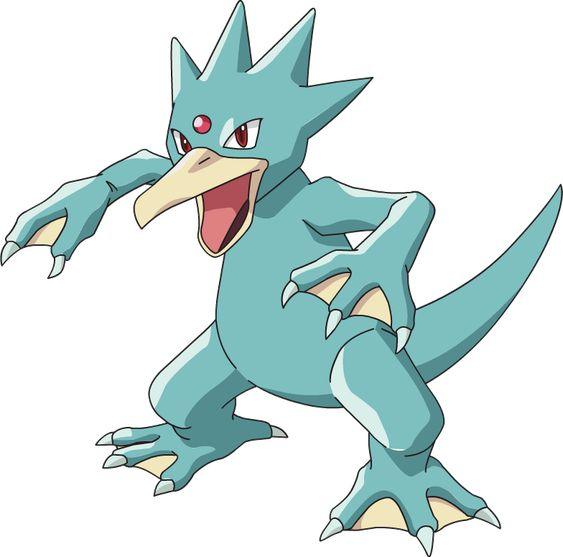
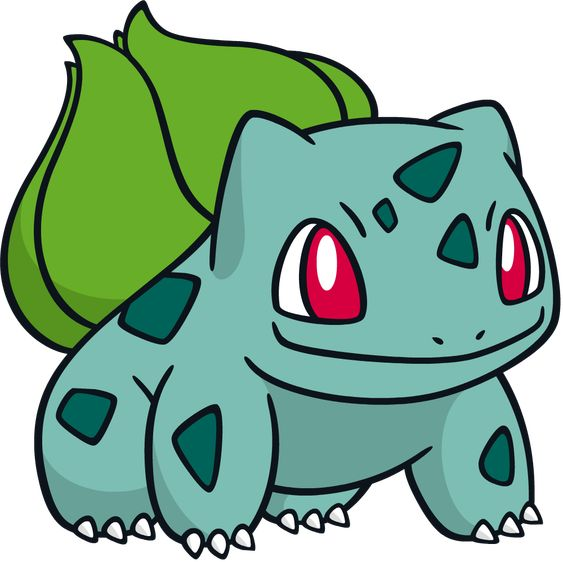
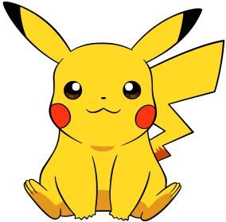
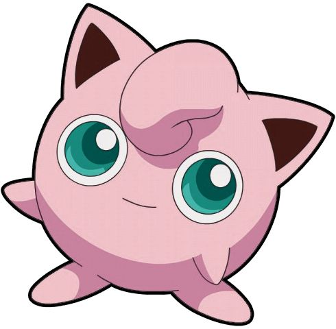
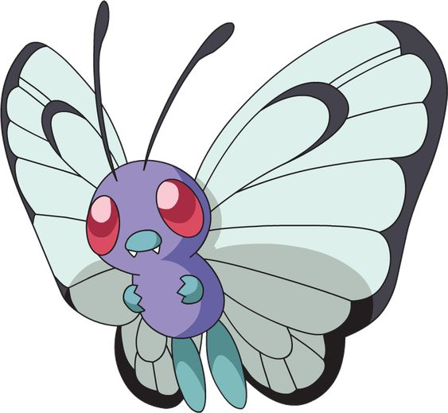
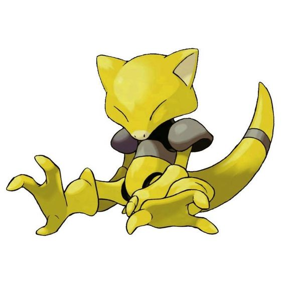
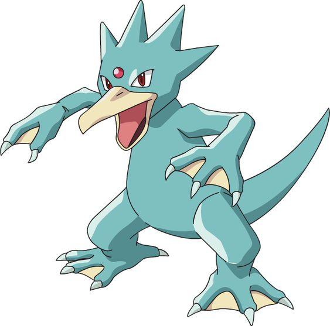
o Mundo Pokémon é dividido em regiões que são inspiradas em locais do mundo real. Kanto, Johto, Hoenn e Sinnoh são inspiradas em áreas geográficas do Japão. Já Unova é inspirada em Nova York, Kalos é baseada na França, Alola é uma cópia das ilhas do Havaí e Galar, que ainda fará sua estreia na franquia, é semelhante às Ilhas Britânicas. Em muitos casos, os Pokémons acabam afetados pelo clima e características desses locais. Isso é mais evidente da região de Alola, em que muitos Pokémons são diferentes de suas contrapartes normais. Depois, os continentes foram modificados novamente graças à interferência de Regigigas, que com sua força, criou as regiões que nós conhecemos dentro do Mundo Pokémon. Mas antes que o Pokémon causasse mais mudanças, ele foi selado pelo Regis (que, até onde se sabe, podem ter sido criados pelos humanos) na região de Sinnoh. E muitas das cavernas existentes dentro do Mundo Pokémon foram uma obra dos Pokémon do tipo terrestre. Um bom exemplo é a caverna dos Digletts, que fica na região de Kanto.
Acreditam que o Mundo Pokémon se trata apenas de nossa atual civilização alguns anos no futuro, por conta das tecnologias existentes. No entanto, muitos se esquecem que sua história sempre foi influenciada e afetada pelos Pokémon. Até onde se sabe, o criador do Mundo Pokémon é o lendário Arceus. Foi ele quem criou Dialga, Palkia e Giratina para serem os guardiões do tempo, espaço e caos. Após isso, Arceus deu vida à Azelf, Uxie e Mesprit para que eles criassem a força de vontade, conhecimento e emoções, respectivamente. Esse Pokémon citados acima podem ser considerados deuses dentro da franquia. Além disso, existem várias cavernas e cidades antigas que revelam que os Pokémon ajudaram a formar à civilização humana. O exemplo mais famoso são as Ruínas de Alph, que dão a entender que os humanos desenvolveram suas linguagens com a ajuda das mais variadas formas dos Unowns.
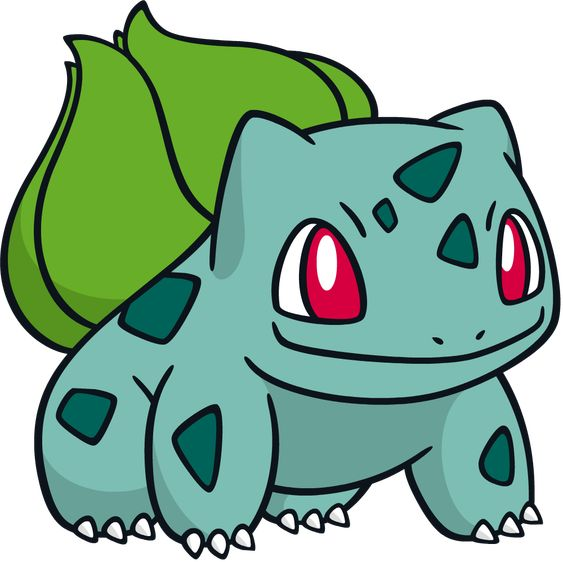
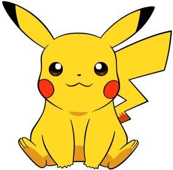
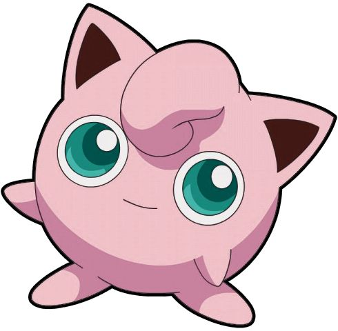
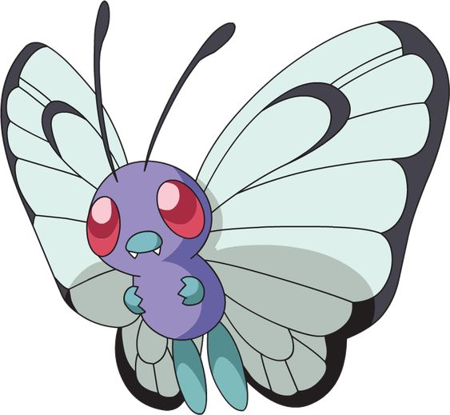
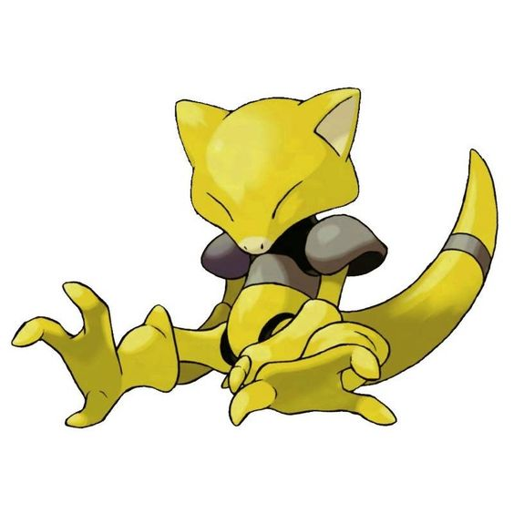
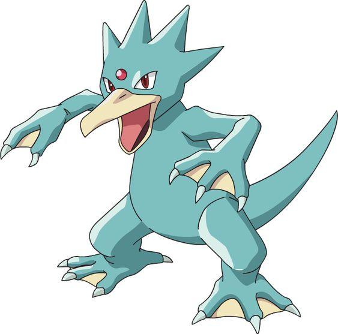
"Eu treinei muito pra chegar onde estou, não será facil me derrotar!"
"Eu espero que saia tudo como o planejado, sua derrota já estava escrita por mim!"
"Seja forte!"
"HAHAHAH! Vocês são tão estranhos!"
Segundo Ken Sugimori, um dos designers originais da primeira geração dos games Pokémon, o primeiro ser desenvolvido para a franquia foi Rhydon, um monstro bípede que mistura características de rinocerontes e dinossauros. Mesmo com o título de primeiro Pokémon criado, Rhydon aparece somente na 112ª posição da Pokédex, dispositivo conhecido na franquia por catalogar os monstrinhos.
Há ainda outra curiosidade envolvendo o mascote da franquia. Assim como no mangá, que foi lançado meses antes do anime, Clefairy foi projetada para ser tanto mascote de Pokémon quanto o monstrinho inicial de Ashe no episódio piloto do desenho animado japonês. Mas, de última hora, o ratinho elétrico se tornou não só o grande aliado de Ash, como também o rosto que estampa a franquia Pokémon até hoje por ser considerado mais popular entre os fãs na época
Pokémon também é centro de algumas polêmicas e até processos judiciais. No início da década de 2000, o ilusionista israelence Uri Geller abriu um processo contra a Nintendo por causa das cartas do Pokémon Kadabra no game de cartas da franquia. Segundo o ilusionista, que ficou famoso por supostamente entortar colheres com o poder da mente, a gigante japonesa se inspirou nele para desenvolver Kadabra sem sua permissão - é válido lembrar que, além de entortar colheres, o nome do Pokémon psíquico no Japão é “Yungeller”, uma homenagem direta ao ilusionista israelense.
ulho de 2016 marcou mais um curioso capítulo na história da franquia: em colaboração tripla, Nintendo, The Pokémon Company e Niantic lançaram o jogo Pokémon GO para dispositivos Android e iOS. O game, que mistura realidade aumentada das câmeras e a localização de dispositivos móveis em tempo real, foi um sucesso absoluto logo em seu lançamento, fator que rendeu várias histórias nos últimos anos.